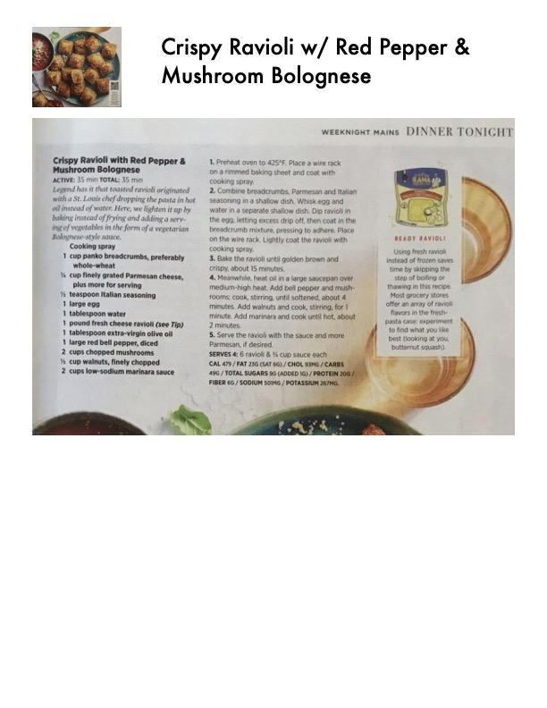

Crispy Ravioli w/ Red Pepper & Mushroom Bolognese

Original cookbook page 63
Comfort food at its best. Instead of or alongside oil instead of water. Here, we lighten it up by baking instead of frying and adding a serving of vegetables in the form of a vegetarian 'meat' sauce.
Prep: 35 minutes • Total: 35 minutes
Ingredients
- 1 cup panko breadcrumbs, preferably whole-wheat
- 1/3 cup grated Parmesan cheese, plus more for serving
- 1 teaspoon Italian seasoning
- 1 large egg
- 1 tablespoon water
- 1 pound fresh cheese ravioli (see Tip)
- 1 tablespoon extra-virgin olive oil
- 1 large red bell pepper, diced
- 2 cups chopped mushrooms
- 1 cup walnuts, finely chopped
- 2/3 cup low-sodium marinara sauce
Instructions
- Preheat oven to 425°F. Place a wire rack on a rimmed baking sheet and coat with cooking spray.
- Combine breadcrumbs, Parmesan and Italian seasoning in a shallow dish. Whisk egg and water in a separate shallow dish. Dip ravioli into the egg, letting any excess drip off, then coat with breadcrumb mixture, pressing to adhere. Place on the wire rack. Lightly coat the ravioli with cooking spray.
- Bake the ravioli until golden brown and crispy, about 15 minutes.
- Meanwhile, heat oil in a large saucepan over medium-high heat. Add bell pepper and mushrooms; cook, stirring occasionally, for 8 minutes. Add walnuts and cook, stirring, for 1 minute. Add marinara and cook until hot, about 2 minutes more.
- Serve the ravioli with the sauce and more Parmesan, if desired.
Recipe #63 from collection